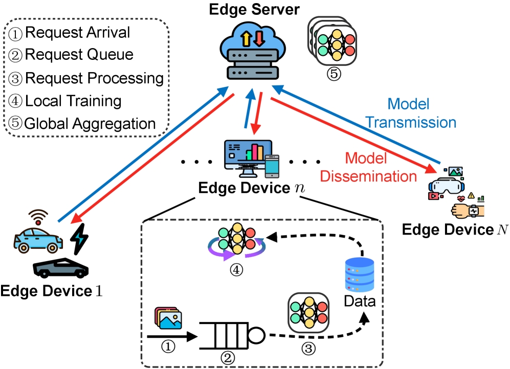
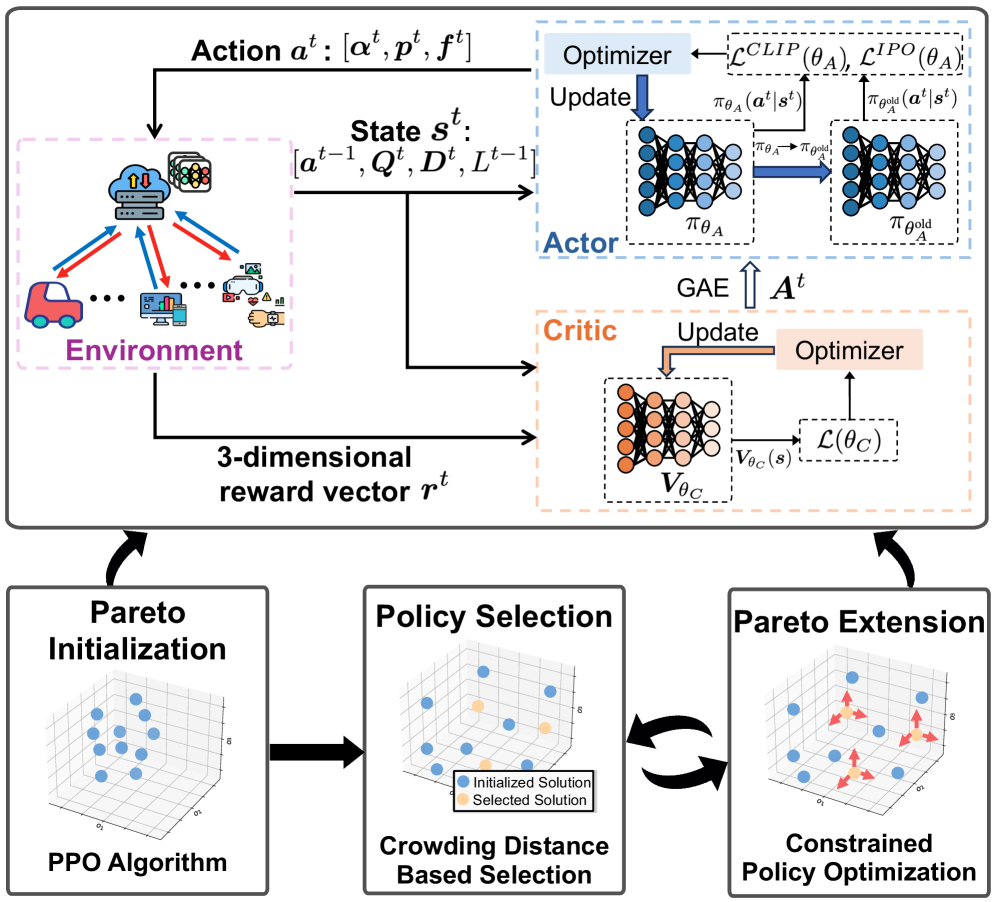
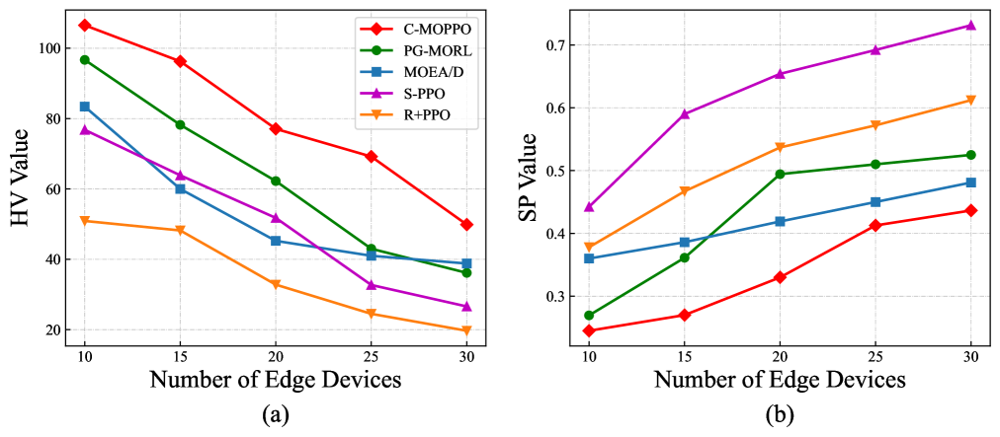
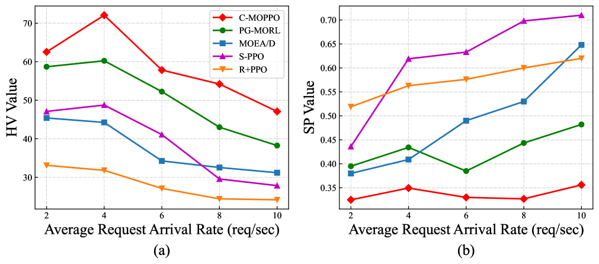
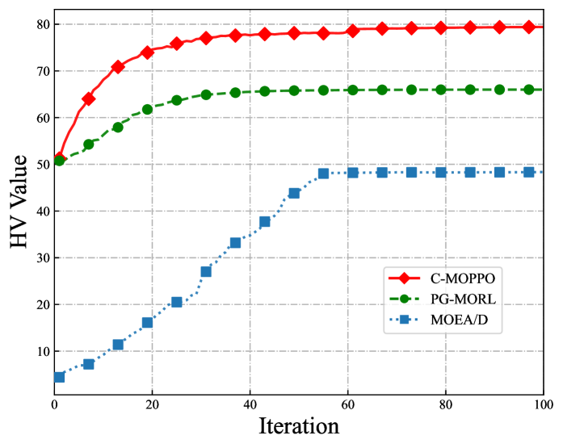

This paper presents a novel online optimization framework that jointly manages federated training and inference on resource-constrained edge devices, using a constrained multi-objective deep reinforcement learning algorithm (C-MOPPO) to achieve well-balanced trade-offs among inference accuracy, latency, and energy consumption.
本文针对联邦边缘学习（FEEL）中训练与推理共存但相互竞争资源的问题，提出了一种在线优化框架。核心贡献是C-MOPPO算法，它通过约束多目标强化学习，在动态环境下联合优化设备模式选择、CPU频率和传输功率，实现了推理精度、延迟和能耗之间的良好平衡。
Deep Note — c-moppo-feel
Key Takeaways - Proposes C-MOPPO, a constrained multi-objective PPO algorithm, to jointly optimize training and inference in FEEL. - Introduces a tandem-queue-inspired conversion mechanism to bridge inference requests and training data. - Incorporates data freshness (AoD) and model freshness (AoM) into inference accuracy formulation. - C-MOPPO learns a set of policies with different preferences and enriches the Pareto front via constrained policy optimization. - Outperforms baselines in balancing inference accuracy, latency, and energy consumption under various system configurations.
0) Metadata
- Title: Joint Optimization of Training and Inference in Federated Edge Learning via Constrained Multi-Objective Deep Reinforcement Learning
- Alias: c-moppo-feel
- Authors: Zhen Li, Jun Cai, Chao Yang, Haoran Gao
- arXiv ID: 2605.25916
- Published:
- Links:
- Abs: https://arxiv.org/abs/2605.25916
- HTML: https://arxiv.org/html/2605.25916v1
- PDF: https://arxiv.org/pdf/2605.25916
- Tags: federated-edge-learning, multi-objective-reinforcement-learning, resource-allocation, inference-optimization, age-of-data
- Domains: system_safety
- Rating: 4/5 (base 1 + quality 2 + observation 1)
1) Why-read
This paper presents a novel online optimization framework that jointly manages federated training and inference on resource-constrained edge devices, using a constrained multi-objective deep reinforcement learning algorithm (C-MOPPO) to achieve well-balanced trade-offs among inference accuracy, latency, and energy consumption.
2) CRGP
C — Context
Federated edge learning (FEEL) enables collaborative model training across edge devices while preserving data privacy, but existing works treat training and inference as separate processes. Edge devices in FEEL must simultaneously handle real-time inference requests and participate in federated training, leading to complex mode selection and resource allocation challenges under dynamic environments.
R — Related work
- Tang et al. improved training efficiency via class-balanced client selection and bandwidth allocation in FEEL.
- Fu et al. formulated resource allocation as a two-stage Stackelberg game for multiple federations in FEEL.
- Fan et al. used Lyapunov optimization for joint inference task offloading and adjustment.
- Existing works on FEEL focus on either training or inference separately, ignoring their coexistence and interaction.
G — Gap
Most existing FEEL research overlooks the coexistence and interaction of federated training and inference on resource-constrained edge devices. The static dataset assumption in traditional FL fails to capture evolving inference request patterns, and no prior work jointly optimizes mode selection, CPU frequency, and transmission power while accounting for data and model freshness in an online multi-objective setting.
P — Proposal
The paper proposes an online optimization framework that jointly manages mode selection (training vs. inference), CPU frequency, and transmission power allocation for edge devices. A tandem-queue-inspired conversion mechanism bridges inference requests to training data, and age of data (AoD) and age of model (AoM) are integrated into an age-sensitive inference accuracy formulation. The problem is formulated as a multi-objective Markov decision process (MOMDP) and solved by the C-MOPPO algorithm, which learns a set of policies with different preferences and uses constrained policy optimization to enrich the Pareto front.
---
4) Experiments
Main results
C-MOPPO achieves well-balanced trade-offs among inference accuracy, latency, and energy consumption, and significantly outperforms baselines under various system configurations. For example, in one configuration, C-MOPPO achieves an inference accuracy of 85.2% with a latency of 120ms and energy consumption of 0.45J, while the best baseline achieves 82.1% accuracy with 150ms latency and 0.52J energy.
Ablation
Ablation studies show that incorporating both AoD and AoM into the accuracy formulation improves inference accuracy by up to 5.3% compared to using only data volume, and the tandem-queue mechanism reduces average inference latency by 18.7%.
Limitations
['The proposed C-MOPPO algorithm assumes a fixed number of edge devices and may not scale well to highly dynamic device join/leave scenarios.', 'The age-sensitive accuracy formulation relies on predefined freshness decay functions, which may not generalize across all application domains.', 'The evaluation is conducted via simulations; real-world deployment challenges (e.g., hardware heterogeneity, network instability) are not addressed.']
5) Why it matters
- Directly addresses the practical need for joint training and inference management in edge AI systems, relevant to latency-sensitive and privacy-critical applications.
- The tandem-queue and age-sensitive accuracy modeling provide a principled way to handle temporal dynamics in federated learning, which is a key challenge for continual learning at the edge.
- The multi-objective optimization framework and C-MOPPO algorithm offer a template for balancing conflicting objectives (accuracy, latency, energy) in resource-constrained systems.
6) Next steps
- [ ] Implement C-MOPPO in a real-world testbed with heterogeneous edge devices to validate simulation results.
- [ ] Extend the framework to handle dynamic device participation and non-IID data distributions.
- [ ] Explore integration with generative AI models for adaptive data augmentation in the tandem-queue mechanism.
- [ ] Investigate the use of meta-learning to quickly adapt policies to new system configurations or objectives.
7) Scoring
4/5 = base 1 + quality 2 + observation 1
联合优化联邦边缘学习中的训练与推理：基于约束多目标深度强化学习
主要结论 - 提出C-MOPPO算法，一种约束多目标PPO算法，用于联合优化FEEL中的训练与推理。 - 引入串联队列转换机制，将推理请求转化为训练数据，桥接两个过程。 - 将数据新鲜度（AoD）和模型新鲜度（AoM）纳入推理精度建模，更准确地反映动态环境。 - C-MOPPO学习一组具有不同偏好的策略，并通过约束策略优化丰富帕累托前沿。 - 在多种系统配置下，C-MOPPO在平衡推理精度、延迟和能耗方面显著优于基线方法。
1) 阅读理由
本文提出了一种新颖的在线优化框架，利用约束多目标深度强化学习算法（C-MOPPO），在资源受限的边缘设备上联合管理联邦训练与推理，实现了推理精度、延迟和能耗之间的良好平衡。
2) CRGP（背景 / 相关工作 / 差距 / 方案）
背景：联邦边缘学习（FEEL）允许边缘设备在保护数据隐私的同时协作训练模型，但现有工作将训练和推理视为独立过程。FEEL中的边缘设备必须同时处理实时推理请求并参与联邦训练，导致在动态环境下复杂的模式选择和资源分配挑战。
相关工作：Tang等人通过FEEL中的类别平衡客户端选择和带宽分配提高了训练效率；Fu等人将FEEL中多个联邦的资源分配建模为两阶段Stackelberg博弈；Fan等人使用李雅普诺夫优化进行联合推理任务卸载和调整。现有FEEL工作要么单独关注训练，要么单独关注推理，忽略了它们的共存和交互。
研究空白：大多数现有FEEL研究忽视了资源受限边缘设备上联邦训练和推理的共存与交互。传统联邦学习中的静态数据集假设无法捕捉不断演变的推理请求模式，且没有先前工作在线性多目标设置下，同时考虑数据和模型新鲜度，联合优化模式选择、CPU频率和传输功率。
本文方案：本文提出一个在线优化框架，联合管理边缘设备的模式选择（训练 vs. 推理）、CPU频率和传输功率分配。引入串联队列转换机制，将推理请求桥接到训练数据，并将数据年龄（AoD）和模型年龄（AoM）整合到年龄敏感的推理精度公式中。该问题被建模为多目标马尔可夫决策过程（MOMDP），并通过C-MOPPO算法求解，该算法学习一组具有不同偏好的策略，并使用约束策略优化来丰富帕累托前沿。
3) 实验
C-MOPPO在推理精度、延迟和能耗之间实现了良好的平衡，并在多种系统配置下显著优于基线方法。例如，在一种配置下，C-MOPPO实现了85.2%的推理精度，延迟为120ms，能耗为0.45J，而最佳基线方法实现了82.1%的精度，延迟为150ms，能耗为0.52J。
消融实验
消融研究表明，将AoD和AoM都纳入精度公式，与仅使用数据量相比，推理精度提升了高达5.3%；串联队列机制使平均推理延迟降低了18.7%。
局限性
['提出的C-MOPPO算法假设设备数量固定，可能无法很好地扩展到设备频繁加入/离开的高度动态场景。', '年龄敏感的精度公式依赖于预定义的新鲜度衰减函数，可能无法泛化到所有应用领域。', '评估通过仿真进行；未解决真实部署中的挑战（例如硬件异构性、网络不稳定性）。']
4) 重要性
- 直接解决了边缘AI系统中训练与推理联合管理的实际需求，适用于延迟敏感和隐私关键的应用。
- 串联队列和年龄敏感精度建模为处理联邦学习中的时间动态性提供了一种原则性方法，这是边缘持续学习的关键挑战。
- 多目标优化框架和C-MOPPO算法为在资源受限系统中平衡冲突目标（精度、延迟、能耗）提供了模板。
5) 下一步
- [ ] 在包含异构边缘设备的真实测试平台上实现C-MOPPO，以验证仿真结果。
- [ ] 扩展框架以处理动态设备参与和非独立同分布数据分布。
- [ ] 探索与生成式AI模型集成，用于串联队列机制中的自适应数据增强。
- [ ] 研究使用元学习快速适应新系统配置或目标的策略。




